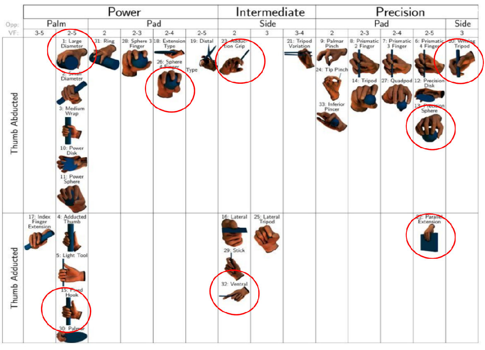

Grasp Recognition using Sensor Glove
This project presents a glove-based grasp recognition system using six flex sensors and machine learning. It captures hand movements and classifies eight grasp types, covering power and precision categories. A total of 720 grasp samples were collected from two participants using diverse everyday objects. Models were evaluated with Leave-One-Subject-Out Cross-Validation (LOSO-CV), and the CNN-biLSTM model showed the best generalization.
System and Glove Design

Figure 3: Full circuit diagram showing sensor connections to Arduino Mega.
Data Collection and Taxonomy

Figure 4: GRASP taxonomy showing different types of human grasps.

Figure 5: Everyday objects used in grasp data collection.
Model Architecture and Training
We explored two modeling strategies for classifying grasp types: a Sequential Approach and a Static Approach.
The sequential models treat sensor signals as time series and capture dynamic patterns across a 10-step sliding window.
In contrast, the static models classify grasp types based on stable posture points extracted from each sequence.
A total of five models were developed for comparison: three sequential models (1D CNN, LSTM, and CNN-biLSTM) and two static models (Support Vector Machine and Fully Connected Neural Network).
Among them, the CNN-biLSTM hybrid model demonstrated the best performance and generalization.

Figure 6: Architecture of the hybrid CNN-BiLSTM model combining spatial feature extraction and bidirectional temporal modeling.
To evaluate model generalization across individuals, we used a Leave-One-Subject-Out Cross-Validation strategy.
With two participants, each model is trained on one participant's data and tested on the other's. This ensures the models are tested on entirely unseen users.
Figure 7: LOSO cross-validation strategy across two participants.
Results and Analysis
Our LOSO-CV results, visualized in the figure below, highlight the superior generalization ability of the CNN-biLSTM model. It consistently achieves the highest average accuracy with small error bars across grasp types, indicating robustness against individual variability and sensor drift. In comparison, standalone CNN and LSTM models show greater performance fluctuation, especially for grasps like Fixed Hook and Sphere 4-Finger, due to their limited capacity to jointly capture spatial and temporal features. Static models (SVM and NN) performed well on clearly defined postures but exhibited larger performance gaps across folds, suggesting reduced adaptability to ambiguous or transitional grasps. Overall, CNN-biLSTM offers the best trade-off between accuracy and generalization, making it highly suitable for real-world deployment in assistive and human-in-the-loop systems.

Figure 8: Per-class accuracy comparison with error bars across models.